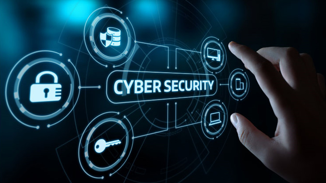
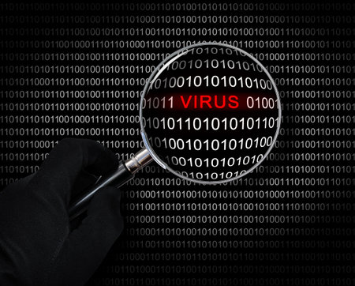

¿Que es?
La Ciberseguridad es el trabajo dedicado a proteger equipos de
- virus
- hackers
- grandes ataques

¡mas informacion!
¿como funciona?
La ciberseguridad funciona vigilando y protegiendo el sistema en todo momento. Se encarga de detectar amenazas, bloquear el paso a los hackers y neutralizar los virus antes de que causen daños. Si ocurre un ataque, analiza cómo entraron para cerrar esa falla y evitar que vuelva a suceder.

Las ventajas son que mantiene tu información personal a salvo, evita que destruyan o secuestren tus dispositivos y garantiza que tus cuentas sigan siendo solo tuyas.
| Con Ciberseguridad | Sin Ciberseguridad | |
|---|---|---|
| Protección | Bloquea virus, malware y phishing. | Vulnerable a cualquier amenaza. |
| Datos | Cifrados y con copias de respaldo. | Riesgo de robo o pérdida permanente. |
| Rendimiento | Estable y monitoreado. | Lento por procesos no autorizados. |
| Acceso | Autenticación segura . | Acceso fácil para terceros. |
En conclusión, la ciberseguridad es la última línea de defensa en el mundo digital. Sin ella, cualquier sistema queda expuesto.
con ella, tenés el control, neutralizás las amenazas y garantizás que la tecnología trabaje para vos y no en tu contra.
¡Unos de los sistemas operativos mas usados para cibereguridad!
volver al home